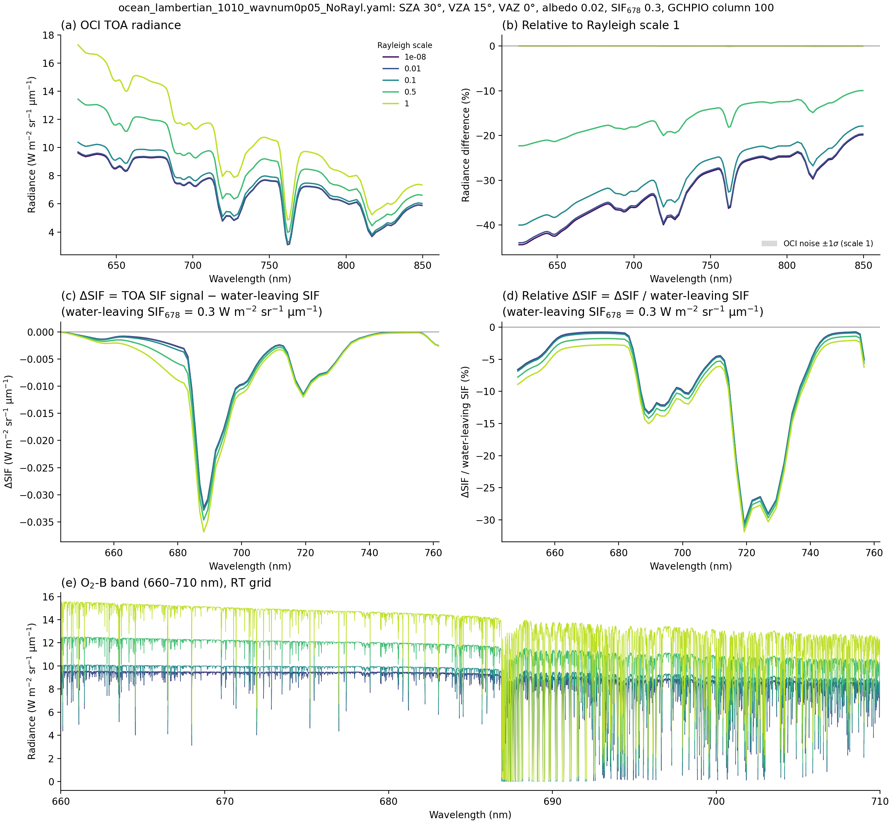
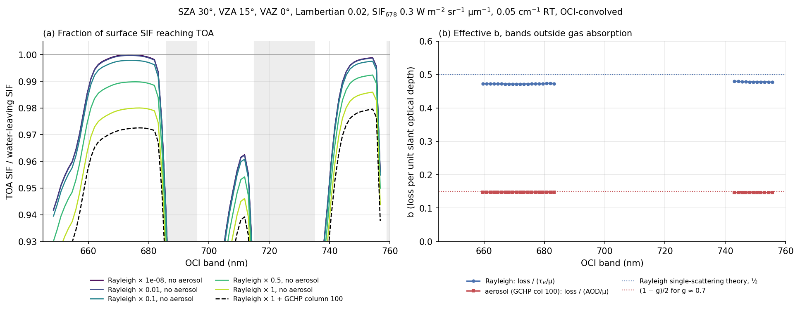
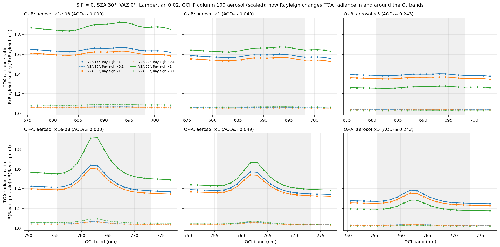

Why an isotropic SIF source still loses light to Rayleigh scattering
Water-leaving SIF is emitted isotropically, yet the RT delivers only about 98% of it to the top of the atmosphere at near-nadir views, and about 96% at 60°. The retrieval's forward model multiplies SIF by gas transmittance only, so it misses this loss. This page explains where the loss comes from, why it is close to half the Rayleigh slant optical depth, why aerosols remove much less per unit optical depth, and how much of the retrieval bias it accounts for.
What happens along the line of sight
Isotropy describes how the surface emits, not what happens on the way up. The sensor sees one beam from the pixel to the satellite. Molecules along that beam scatter some photons out of it; Rayleigh scattering does not absorb, so those photons are redirected, not destroyed. On its own the beam would be weakened by exp(−τR/μv), with μv = cos VZA.
Because the surface also emits SIF in every other upward direction, photons from neighbouring beams are scattered into the line of sight, which replaces part of the loss. It cannot replace all of it: some of the scattered light goes into the lower hemisphere, toward a dark ocean that absorbs nearly all of it. That fraction is lost for good.
Why b = ½ for Rayleigh
Single-scattering bookkeeping for a thin layer (τ ≪ 1): a beam leaves the surface in direction μ with radiance I₀, and the surface emits I₀ isotropically into the whole upper hemisphere.
The Rayleigh phase function contains only the Legendre terms P₀ and P₂:
In words: of all the light scattered out of upward beams, half goes back into upward directions and half goes downward. The phase function treats Θ and π − Θ alike, so it cannot favour either hemisphere. The upward half refills the isotropic field, and so every view direction equally; the downward half is lost to the surface. Molecular depolarization (δ ≈ 0.03) only scales the P₂ term, so b stays at ½.
The view-angle dependence comes from the path: the loss grows as τ/μv, while the in-scattered light from the isotropic field does not grow at the same rate. So the TOA SIF radiance is not isotropic even though the source is.
What the RT shows
A single scene (SZA 30°, VZA 15°, VAZ 0°, Lambertian albedo 0.02, SIF678 = 0.3 W m⁻² sr⁻¹ µm⁻¹) was run with the Rayleigh optical depth scaled by 10⁻⁸, 0.01, 0.1, 0.5 and 1, with and without the GCHPIO aerosol of GCHP column 100, each with and without SIF. The TOA SIF signal is the difference between the runs with and without SIF.


| λ (nm) | τR | Rayleigh loss | bR | AOD | Aerosol loss | baer |
|---|---|---|---|---|---|---|
| 665 | 0.0434 | 0.0213 | 0.474 | 0.0499 | 0.0076 | 0.147 |
| 678 | 0.0400 | 0.0196 | 0.473 | 0.0485 | 0.0074 | 0.147 |
| 701 | 0.0351 | 0.0170 | 0.468 | 0.0464 | 0.0069 | 0.144 |
| 741 | 0.0280 | 0.0139 | 0.479 | 0.0430 | 0.0065 | 0.146 |
The RT's bR ≈ 0.47 rather than 0.50 because the single-scattering estimate leaves out higher orders of scattering, which send part of the downward-scattered light back up, and the 2% of light the surface reflects. The aerosol shift is the same at every Rayleigh scaling (−0.0074 at 678 nm), so for layers this thin the two losses simply add: loss ≈ (bRτR + baerAOD)/μv.
Why aerosols remove less per unit optical depth
The same formula applies, but the aerosol phase function is strongly forward-peaked (asymmetry g ≈ 0.7). Light scattered out of an upward beam stays close to its original direction, so most of it stays in the upper hemisphere and keeps refilling the isotropic field. Only roughly the backscattered fraction, about (1 − g)/2 ≈ 0.15, goes down to the surface, which is what the RT gives. A little absorption (ω̃ slightly below 1 from sulfate, organics and black carbon) adds about τ(1 − ω̃)/μ ≈ 0.0005.
So in this scene the aerosol has slightly more optical depth than Rayleigh (0.049 vs 0.040 at 678 nm) but removes less than half as much SIF (0.74% vs 1.96%). Rayleigh has b ≈ ½; a purely forward scatterer would have b = 0; a strong backward scatterer approaches 1. Absorption adds directly to b, because absorbed photons never come back.
Surface reflectance
For SIF, a Lambertian surface of albedo A returns a fraction A of the downward-scattered light upward and isotropically, so to first order beff ≈ ½(1 − A). Over the ocean (A ≈ 0.02) this is 0.49 instead of 0.50, a negligible change. Over vegetation it matters mainly in the far-red, where albedo is 0.3–0.5 (beff ≈ 0.25–0.35); near the 685 nm peak, chlorophyll keeps vegetation albedo low, around 0.03–0.08. Elevated land also has less air above it, so τR is proportionally smaller.
For reflected sunlight, albedo sets how much of the TOA signal is Rayleigh. The path term does not depend on the surface, while the surface term scales with A: ρTOA = ρpath + T↓T↑A / (1 − S·A). Over this dark ocean the Rayleigh path radiance is 45% of the TOA radiance at 645 nm, 39% at 678 nm and 32% at 741 nm (Figure 1a, b).
Inside the O₂ bands: Rayleigh makes them shallower
The same path-length argument applies to reflected sunlight. To see it, the scene was run with SIF switched off (SZA 30°, VAZ 0°, Lambertian 0.02, GCHP column 100 aerosol scaled by 10⁻⁸, 1 and 5), and each run with Rayleigh on was divided by the identical run with Rayleigh off: same view, same aerosol, same surface. Geometry, aerosol and surface cancel, and the ratio shows only what Rayleigh adds.

| Aerosol (AOD 678) | VZA | O₂-B continuum ratio | O₂-B in-band excess | O₂-A continuum ratio | O₂-A in-band excess |
|---|---|---|---|---|---|
| none (0) | 15° | 1.63 | +1.8% | 1.40 | +17.0% |
| none | 60° | 1.86 | +2.4% | 1.53 | +24.9% |
| ×1 (0.049) | 15° | 1.57 | +1.5% | 1.37 | +14.7% |
| ×1 | 60° | 1.63 | +1.7% | 1.42 | +17.6% |
| ×5 (0.243) | 15° | 1.39 | +1.0% | 1.26 | +9.5% |
| ×5 | 60° | 1.26 | +0.8% | 1.19 | +8.1% |
"In-band excess" is the ratio at the band centre (688.1 nm for O₂-B, 761.8 nm for O₂-A) divided by the ratio interpolated across the band from its edges, minus one. VZA 30° (not shown) sits between 15° and 60°.
Why the band gets shallower although Rayleigh scattering is elastic. No photon changes wavelength; each wavelength is independent. At one wavelength the TOA signal is the sum of surface-reflected light, which crosses the whole O₂ column twice, and Rayleigh light, which turns around where it scattered and crosses only the O₂ above that level, about half the optical depth:
At 761.8 nm the surface light has an O₂ optical depth of 0.85 and the Rayleigh light 0.40, so inside the band the Rayleigh share is enhanced by about e^(0.85−0.40) ≈ 1.6 relative to the continuum. Against the continuum the band looks partly filled in, but the cause is a shorter path, not a wavelength shift; "band-depth reduction from path shortening" is the more accurate name.
- O₂-A vs O₂-B. At OCI resolution O₂-A is deep (band transmittance ≈ 0.4–0.5), so the half-path Rayleigh light becomes a much bigger share inside it: +15–25%. O₂-B is shallow (≈ 0.82), so the excess is only +1–2%.
- Aerosol dilutes it. Aerosol sits low and returns light with nearly the full O₂ path, lowering the Rayleigh share: five times the aerosol halves the O₂-A excess.
- Slant views amplify it when aerosol is low (+25% at 60°), because the longer Rayleigh path adds more half-path light; with heavy aerosol the trend reverses as the aerosol path grows too.
- It scales almost linearly with Rayleigh: at ×0.1 the continuum ratio is about 1.04–1.06 and the O₂-A excess about +2%.
For the SVD retrieval this is a shape change of the O₂ bands that a gas-only basis with T↑↓ = T↑^α cannot follow, and its size depends on Rayleigh share, aerosol and geometry. It matters most for windows that include O₂-A; in the 640–756 nm window, whose only O₂ band is O₂-B, it is a 1–2% effect.
True fill-in is a different, inelastic process. Rotational Raman scattering by N₂ and O₂ shifts a small fraction of photons by a few cm⁻¹, moving light from bright neighbouring wavelengths into absorption and solar (Fraunhofer) lines: the Ring effect, a few percent in Fraunhofer lines. These runs used vSmartMOM with Raman off (noRS), so it is absent here, but real OCI spectra contain it. Because SIF also fills in Fraunhofer and O₂ lines, Raman fill-in can be mistaken for SIF.
What this means for the SIF retrieval
- The forward model writes TOA SIF as
trans_up · SIFwithtrans_up = exp(PCs·c), gas transmittance only. It misses this scattering loss, so retrieved SIF is low by roughly bRτR/μv + baerAOD/μv: about 2–3% near nadir and 4–5% at 60° over the ocean. - In five GCHPIO ensemble samples spanning VZA 0–60°, the fraction of SIF reaching TOA was 0.948–0.977 (Rayleigh-only 0.960–0.980), while the retrieval returned 0.78–0.91 of the true SIF. After removing the scattering loss, about −0.03 W m⁻² sr⁻¹ µm⁻¹ per sample remains.
- The scattering loss implies k ≈ 0.02 in exp(−k/cos VZA); the w756 retrievals give k ≈ 0.11. So this effect explains roughly a fifth of the view-angle trend. Most of the bias comes from the retrieval itself; candidates are a fitted
trans_upthat departs from 1 near 678 nm, and SIF trading off against the reflectance polynomial. - A simple fix for this part is to multiply the SIF term by a continuum transmittance, about exp(−½τR(λ)·ps/p₀/μv), or to fit a free scalar on it.